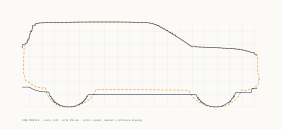
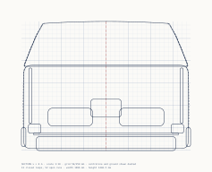
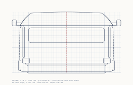
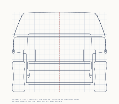

AutoLab 3D Creation Engine
Instruments and ideas for Node.js geometry + an agent-first spatial reasoning framework for code-native 3D model creation with large language models.
npm run fit · measured against specs/rivian-r2.json · model r2-blueprint (this assembly)
dimension expected measured dev tol
--------------------------------------------------------------
(the measured rows are read from out/fit.json when this page loads;
open that file directly if scripts are off)
--------------------------------------------------------------Every published dimension is measured directly off the triangles and compared with its tolerance; where a row is out, the extremes name the part that owns the miss. The numbers on this page are read from out/fit.json, written by the engine when the site was assembled.
The self-test drives every instrument against a fixture whose answer is known by construction, then refuses to certify a real model until its axle-to-axle distance comes back as the published wheelbase. On this assembly: see out/fit.json, wheelbase measured against the published figure.
The first bounding box returned 2.151 m wide against a 1.905 m spec. Both are right: 2.151 is width over mirrors. So every number here carries the parts it was taken from, and width is reported over body and over mirrors separately.




Five defects in a row shipped on this model and were found by eye: a belt rail across both door openings, a body crease inside the rear door opening, a deck band across the cargo opening, a C-pillar overhanging a door opening, a charge-port light through the flank. Every capture had rendered the doors shut, and nothing measured a panel line. The instrument that could have caught all five is now in the engine: it closes every panel, takes the panel's projected footprint, and at four open fractions reports any fixed geometry within 50 mm of the skin and more than 65 mm inside that footprint, by part, inset and depth. Four fixtures of those defect classes fail at 176 to 454 mm inside.
On the current model four openings carry survivors, three distinct findings for the author to judge: the rear door frames reach about 158 mm over the B-pillar above the belt line; the fender top runs 76 mm under the hood's side edge; the load floor's rear lip sits 156 mm inside the liftgate outline (which is how SUVs are built, and listed because the instrument cannot know that). Everything else that meets an opening does so within 65 mm of its edge. The full report is out/apertures.json, and an agent can read it with get_aperture_report.
| Opening | Result | Survivors (part, mm inside the outline, mm behind the skin) | Touching the edge |
|---|---|---|---|
| Read from out/apertures.json when this page loads. | |||
| Command | Question it answers |
|---|---|
selftest | Are the instruments calibrated? Refuses to certify a model whose axle-to-axle distance is not its published wheelbase. |
dims | The measurements a specification actually names, each carrying the landmarks it was taken from. |
fit | Every published dimension against the model, with tolerances, and the part that owns each extreme. |
extremes | Which part owns each end of the envelope. Turns "54 mm too long" into "the headlamps". |
parts | Every part, its category, triangle count and envelope. |
section <x> --svg | A cross-section drawn to scale on a millimetre grid. |
clearance <a> <b> | Nearest surface-to-surface distance, not centre-to-centre. |
overlaps | Which parts' envelopes intersect. |
symmetry | Shape symmetry about the centreline, section by section. |
reference | What the drawing's calibration actually supports, checked against the spec on load. |
knots <curve> --tol | Fewest knots that reproduce the reference, as pasteable source in the model's own interpolator. |
deviate --svg | The model's outline against the drawing, broken down by region. |
curves | The curve layer: which curves are writable, and how anchored. |
propose <curve> --frame | Fit a curve to the drawing, build that model, measure it, show the diff. |
propose … --write | Apply it, after checking the model file has not changed since it was measured; leaves a rollback copy beside it. |
apertures --band --edge | Does any fixed geometry sit at the skin, well inside a door, hood or liftgate opening, at four open fractions? Names the part, how far inside, how deep. The gate built after five such defects escaped every other check. |
Extrapolate. A fit asked for stations the drawing does not cover is refused rather than padded with real-looking knots. Reformat. An unchanged knot is written with the author's own text, character for character. Fit what it cannot verify. Which curve drives which measurement is derived by perturbing the curve and watching what moves. Call noise an improvement. A change smaller than the drawing's own error is a measurement of the drawing.
One command per question, structured output, every number with its landmarks and its tolerance, errors that carry the recovery, and a write path that refuses a dirty working tree because two agents once shared one. It's the loop an LLM can actually run: build → measure → diff in millimetres → edit → repeat, with no picture in it.